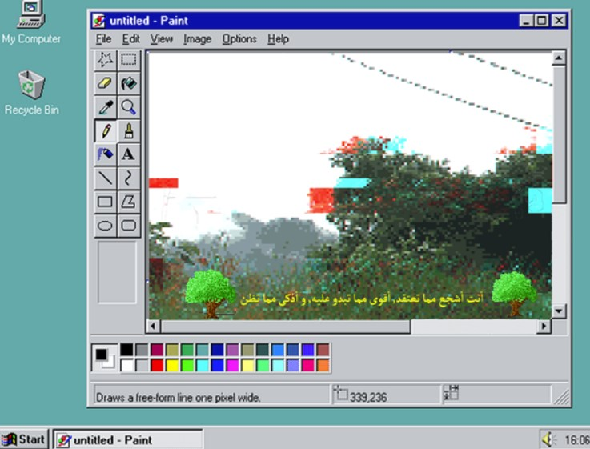
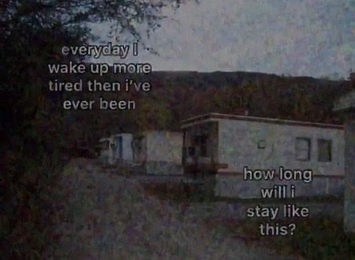
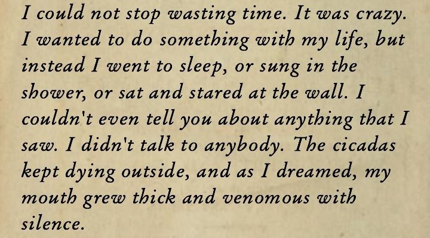

#09 (Ghost)

You're braver than you think,
stronger than you look,
and smarter than what you assume.
A small flower tries not be be seen
But someone spots her and flies past the bees
A little ghost, so small and sweet
But the flower still didn't make a peep
"Flowers are pretty" the ghost said to nobody
"Especially roses" the flower felt like floating
...
The flower spoke up for the first time
"I'm a rose, isn't that nice?"
The ghost and the rose would talk for hours
The nervousness escaping the flower
The ghost swore to never leave her side
...
That midnight in June felt so divine
When the sun went up, the ghost didn't hide
She ducked down, but swore to stay nearby
The flower had never had a friend
This was a lot for her to take in
...
The ghost would stop ducking once the sun said goodbye
And then they'd talk, their voices like chimes
When the rose wilted, her soul would appear
And the first thing she did was to hug the ghost, still near
They now were closer than you could presume
and it's all because of a midnight in June

Somedays I stand against the wall
and pretend I don't exist
Other days I feel my friends
do the same I often feel ignored
no matter how loud I become
I will always remain silent
...
I may as well be a ghost
I often don't exist
I scare others to whom
I'm unknown
I'm missed by those who do
...
One day I'll die
I'll be forgotten
soon I'll become a real ghost
and maybe I'll become a immortal
never to be forgotten
but I guess I'll never know
because I'm alive right now
and not yet them

I am so overwhelmed by life.
Floored by my own emotions.
My god, there are days when I forget
what happiness means let alone how it feels.
It's all quite dramatic.
Perhaps I am a little melodramatic.
I live life like a theatre production.
Except I forgot all my lines and the lights are too bright.
There won't be a saviour but I refuse to draw the curtains.
I improvise and make it up as I go along.
Take comfort in the unknown. yes, I'm terrified.
Brush off the absurdity with a laugh.
Everything is funny once you let go.